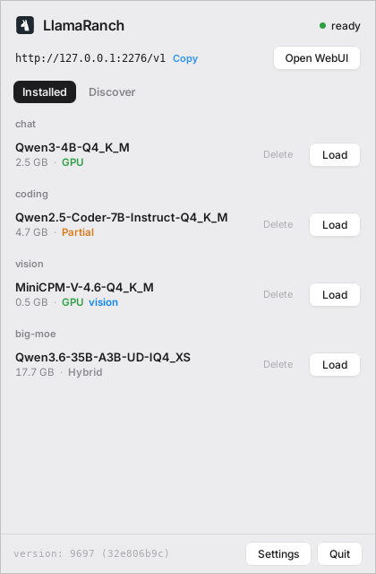

Tue 09:58
Tue 09:58

open source · 100% local · MIT
A quiet ranch for
your local models.
LlamaRanch keeps every llama.cpp model on your machine in one tray and serves them behind a single private endpoint. No cloud. No API keys. Just your hardware, doing the thinking.
🐧 built for Linux, runs on your machine only
Linux and Windows 10 / 11. On a Mac? Use Llama, the macOS app by ggml-org.
Everything, handled.
Hardware aware
llama.cpp's --fit sizes GPU layers and context to the memory you actually have. Nothing to tune.
One click serving
Models load on demand and unload when idle. One server, switched in a click.
Text and vision
Multimodal models are detected and paired with their projector automatically. Chat about images.
Big models too
Models larger than your VRAM run split across GPU and RAM, no offload math required.
OpenAI compatible
Point Continue, Zed, Open WebUI, or your own scripts at the local endpoint. Drop in.
Built in catalog
Find models that fit your machine and pull them from Hugging Face, with a token for gated repos.
Stays current
Checks for new signed releases on launch and updates from inside the app, with a heads-up notification.
Works with your tools.
Any OpenAI-compatible client, pointed at http://127.0.0.1:2276/v1.
Bring any GGUF.
Drop a .gguf file in your models folder, or grab one from the Discover tab. Anything that runs in llama.cpp runs here.
- Qwen3chat
- Qwen2.5 Codercode
- Gemma 3 / 4chat, vision
- Llama 3.2chat
- MiniCPM-Vvision
- Qwen3 Embeddingembed
Install
Download the installer
# Linux
sudo dpkg -i LlamaRanch_*.deb
# Windows 10 / 11
run the .exe installerGrab the build for your OS from the latest release, then launch LlamaRanch and turn on Start on login in Settings.
Build from source
git clone https://github.com/madalintat/LlamaRanch
cd LlamaRanch
npm install
npm run tauri build -- --no-bundleNeeds Rust, Node 18+, and a built llama-server from llama.cpp.
On the trail
Shipped: Linux and Windows installers, in-app auto-updates, the model catalog, text and vision.
- A bigger, richer model catalog
- Multiple models loaded at once
- Per-model settings (context length, sampling)
- ARM64 builds
Built with the llama.cpp crew
LlamaRanch runs on llama.cpp by ggml-org, and follows the trail of their macOS app, Llama. Same engine, a new pasture on Linux. Big thanks to the folks keeping local AI fast and open.